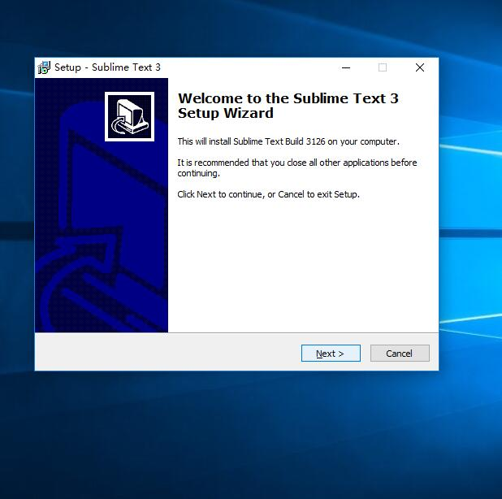
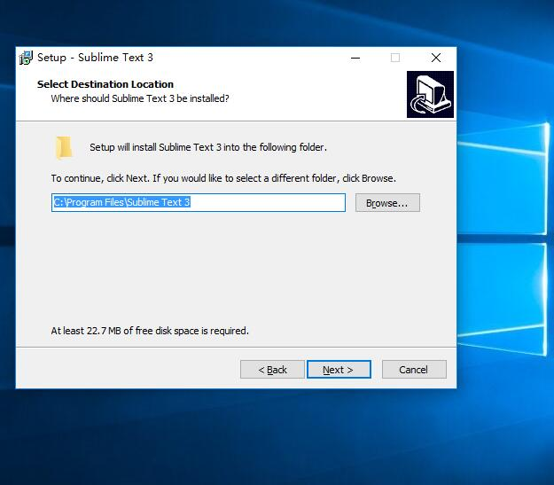
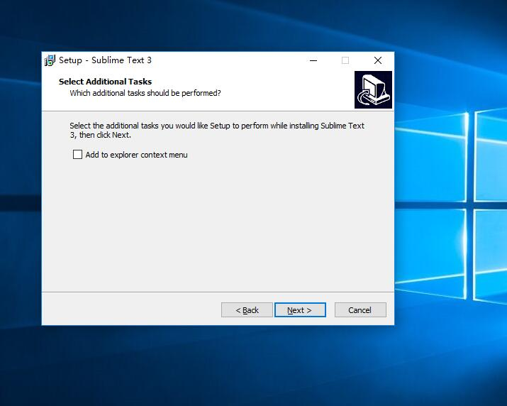
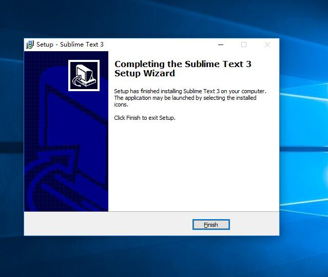
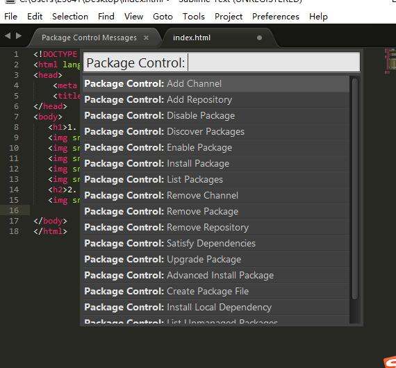
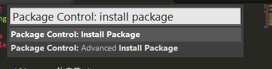
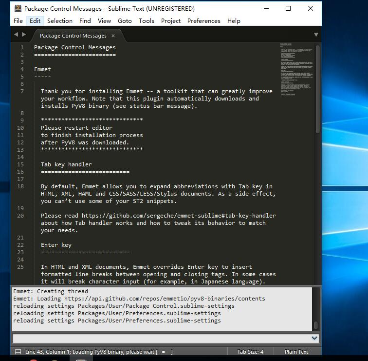
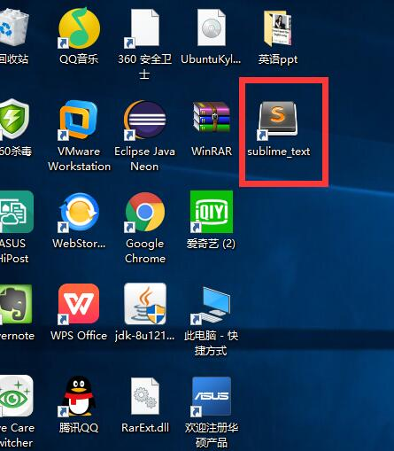

1. Sublime text的安装
i.

ii.

iii.

iv.

2. Package control的安装
自动安装：ctrl+`打开命令窗口，将代码复制进去，回车即可

3. 安装Emmet插件
i.选择菜单Preferences/Package Control
ii.选择Package Control: Install package

iii.跳出窗口中输入emmet，选择emmet插件即可，稍等片刻，即可完成安装

iv.重启sublimet text完成安装
